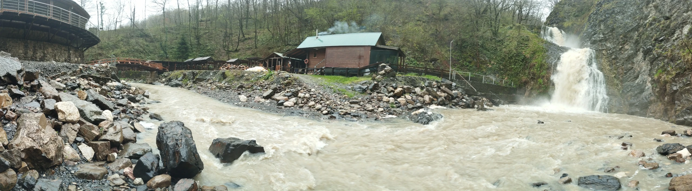
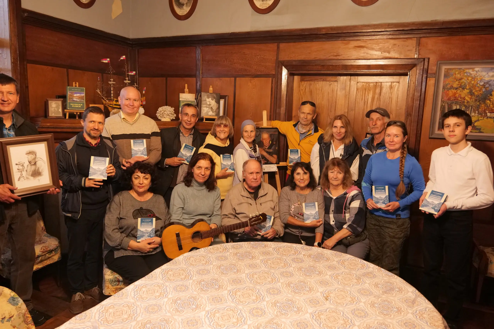
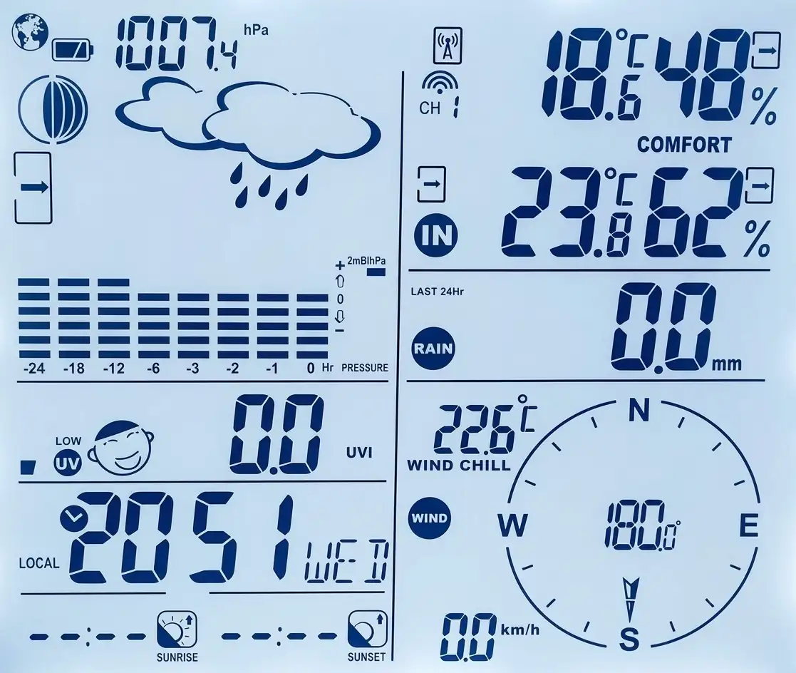

Общее собрание
Созывается не реже 1 раза в год в очной, заочной или онлайн-форме. Утверждает Устав, определяет приоритеты и избирает руководство.

Добровольное самоуправляемое краеведческое общество Сочи: полевые экспедиции, гидрология и география малых рек, цифровой архив, мониторинг и лектории для всех возрастов с акцентом на детей и молодёжь.
Добровольное, самоуправляемое, основанное на членстве общественное объединение, действующее на территории города Сочи и прилегающих горно-черноморских территорий в соответствии с Конституцией РФ и Федеральным законом № 82-ФЗ «Об общественных объединениях» (без государственной регистрации и без образования юридического лица).
Исторический адрес основания Общества — усадьба 1905 года по ул. Войкова, 68. Мы объединяем школьников, студентов и взрослых исследователей: изучаем горные реки, геоморфологию, архивные фонды и историко-культурное наследие Сочи, а результаты публикуем на сайте goosko.ru.

От полевых экспедиций и гидрологического мониторинга до цифрового архива и партнёрства с научными обществами — каждый участник находит свою роль.
Исследуем малые реки, хребты и исторические объекты Сочи. Нажмите на фотографию, чтобы рассмотреть её крупно.
График полевых выходов утверждается Научным Советом или Председателем с учётом погодной и гидрологической обстановки. Места в группе ограничены: записывайтесь заранее.
Выходы проводятся по графику, утверждаемому Научным Советом или Председателем с учётом погодных и гидрологических условий. Актуальные анонсы дублируем в соцсетях и официальных чатах СКО.
Показания автоматического гидропоста №203 на карте emercit.com: температура, влажность, давление и осадки. Данные используются в гидрологических исследованиях малых рек, оценке паводковой обстановки и школьных проектах.

Источник — автоматический гидропост №203 (emercit.com), а не станция на территории усадьбы. Обновление каждые 10 минут.
Загрузка данных…
Единые требования безопасности походов и экспедиций ГОО «СКО», закреплённые в Главе 6 и п. 2.6 нового Устава. Полный текст — в разделе «Устав СКО».
В походах и полевых экспедициях обеспечивается персональное закрепление совершеннолетних кураторов из расчёта не менее 1 взрослого на 5 несовершеннолетних участников (п. 2.6, 6.2 Устава).
Допуск лиц младше 18 лет к полевым выходам возможен только при наличии письменного согласия родителей или законных представителей (Приложение № 2) с контактными телефонами и сведениями об отсутствии медицинских противопоказаний.
Перед началом каждого похода и мониторингового выхода проводится вводный и маршрутный инструктаж по технике безопасности с учётом рельефа, погодных условий и гидрологической обстановки.
На сложных участках применяются защитное снаряжение и страховка. Действует категорический запрет на заход в русла горных рек при прохождении паводковой волны (п. 6.1 Устава).
На протяжении всего маршрута ведётся чат-лог: руководитель фиксирует старт, прохождение контрольных точек и завершение маршрута в чате Организации или у дежурного координатора на связи.
Участники обязаны соблюдать Устав, не отставать от группы и иметь базовый комплект снаряжения. Грубое нарушение правил безопасности в походе является основанием для исключения из СКО по решению Научного Совета.
Для вступления ребёнка (от 8 до 18 лет) заполняется Анкета кандидата (Приложение № 3) и согласие на обработку персональных данных (Приложение № 1), а для участия в полевых выходах обязательно письменное согласие родителей по форме Приложения № 2 с указанием контактов и отсутствия медицинских противопоказаний.
Во время выхода руководитель на связи по телефону +7 (989) 086-89-76, а отметки старта, контрольных точек и возвращения группы публикуются в чат-логе.
Отмечайте пункты перед сбором — список помогает ничего не забыть. Отметки сохраняются только до перезагрузки страницы.
Прозрачная структура управления, открытая финансовая отчётность и понятные правила коммуникации в официальных чатах и сообществах ГОО «СКО».
Созывается не реже 1 раза в год в очной, заочной или онлайн-форме. Утверждает Устав, определяет приоритеты и избирает руководство.
Постоянно действующий коллегиальный орган: планирует экспедиции, рецензирует публикации на goosko.ru, согласует сборы, принимает членов и присуждает звания.
А. Н. Кужим — текущее руководство, представительство без доверенности перед партнёрами, ведение реестра членов, сайта goosko.ru и учёт целевых средств.
Независимый контрольно-ревизионный орган: проверяет целевое использование добровольных взносов, пожертвований и финансовую отчётность.
ГОО «СКО» работает без образования юридического лица — материальная база формируется за счёт добровольного объединения ресурсов участников и благотворителей:
Официальные чаты и сообщества ГОО «СКО» созданы для конструктивной научной, краеведческой и организационной работы:
Ниже — официальная страница сообщества СКО: обложка, описание, закреплённые записи и свежие посты. Здесь же дублируются походные, научные и финансовые отчёты.
Виджет ВКонтакте не загрузился — возможно, его блокирует расширение или сеть. Новости всё равно доступны напрямую в сообществе.
Изучаем, сохраняем и популяризируем наследие и природу Сочи: экспедиции, гидрология, цифровой архив, лектории.
Действующая редакция Устава и все четыре неотъемлемых приложения — доступны для чтения онлайн и печати на А4.
Приём открыт для граждан РФ и лиц, законно находящихся на территории РФ, с 8 лет (для кандидатов от 8 до 18 лет необходимо письменное согласие одного из родителей). Заполните электронную анкету кандидата (Приложение № 3) — поля со звёздочкой обязательны.
Председатель ГОО «СКО» — Андрей Кужим
Приходите на открытые лектории и встречи, пишите по вопросам вступления, совместных экспедиций и партнёрства.
Краснодарский край, г. Сочи
Исторический адрес основания — усадьба 1905 года по ул. Войкова, 68
Используем для встреч, лекций и хранения краеведческого архива
Андрей Кужим
+7 (989) 086-89-76 cuzhima@yandex.ruТелефон / Telegram / официальные чаты
Сотрудничаем с Сочинским географическим обществом (СГО), музеями, школами, вузами, ООПТ и технологическими компаниями.
Устав (п. 1.9) предусматривает интеграцию в качестве автономной молодёжной секции с сохранением самоуправления и ресурсов.